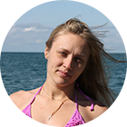
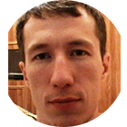
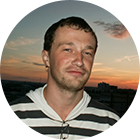

Ирина КазанцеваЯ благодарна возможности получить опыт йоги. Йоги, которая преподносится со знанием тонкостей, с любовью и душой, йоги, которую хочется узнавать. У меня произошло что-то вроде погружения - на 3 или 4 день, я ощутила чувство "здесь и сейчас", когда есть только Дом Солнца, Черное море, учитель и вся наша команда, нет забот, оставшихся дома или на работе, нет волнений за завтра и разочарований за вчера. Вместе с чувством стали меняться и физические ощущения - ушли тревожащие боли и отступили некоторые зажимы.
Это удивительное "исцеление" доказывает, что все внутри нас.

Рустам АглиулинЙога тур – это незабываемый отдых, который на реальном опыте показал мне, как можно жить в спокойном и счастливом расположении духа. Исключительный подход преподавателей и открытость людей согревают и радуют и после приезда домой. А сколько впечатлений от вкусной вегетарианской кухни, просто нет слов, огромное спасибо поварам! Конечно, самое невероятное - это то, что ты понимаешь, как сам меняешься за короткое время, как совсем незнакомые люди становятся тебе очень родными и знакомыми, колоссальный заряд бодрости и энтузиазма.

Владимир ЗадовскийВ Доме Солнце душевнейшая и теплая атмосфера. Так кайфово проводить время с интересными, открытыми, красивыми людьми. Яркие индивидуальности, смело идущие своим путем. Приехав домой, я почувствовал себя инопланетянином. Мировосприятие изменилось. Потребление алкоголя сократилось в разы. По утрам делаю йогу по 1,5ч.
Переписал свои цели и планы и выкинул из жизни всякий ненужный хлам: непонятных знакомых, дурацкие привычки, опасения, чуждые представления и стереотипы и т.п.
Теперь чувствую себя легким и вдохновленным, и это действительно клево.